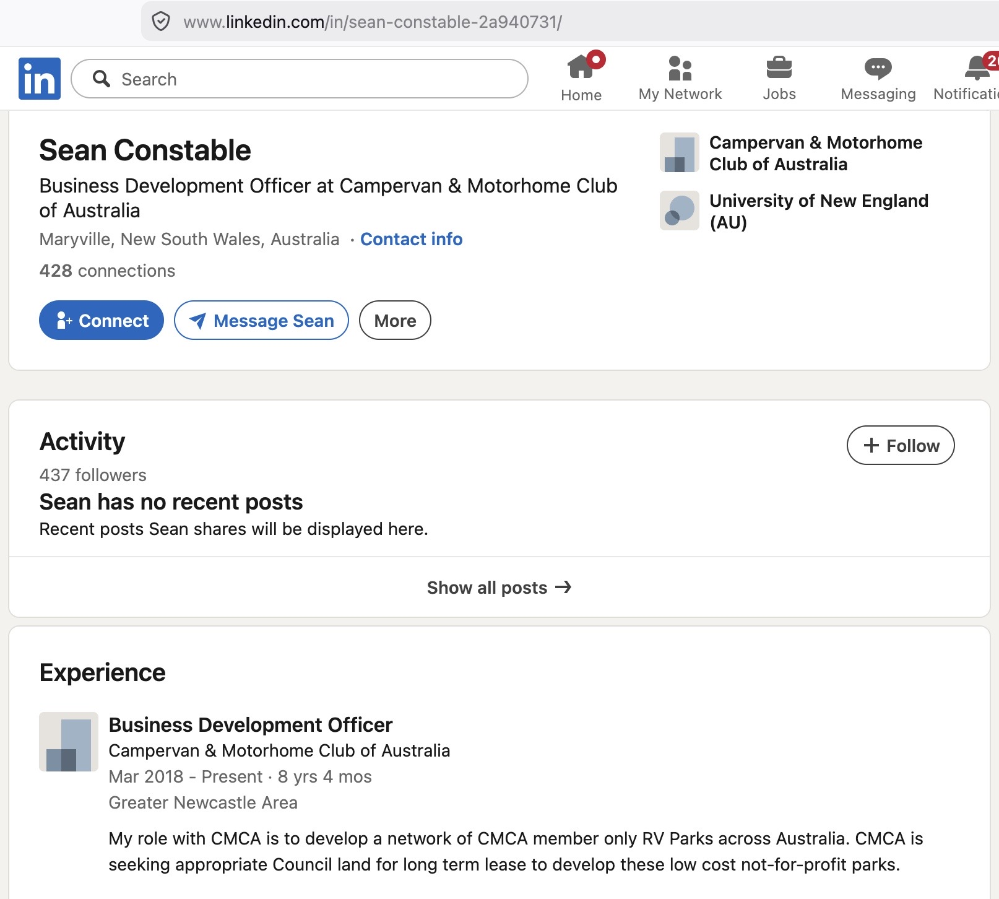
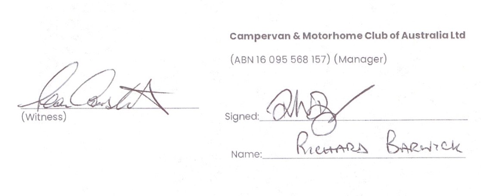

The policy
The notices rely on the CMCA Guest Stay Policy. The Shire's minutes of 28 May 2026 record that "CMCA has developed a formal Guest Stay Policy" for the Flax Mill Caravan Park (Ref: CMCA-GSP-FMB-001), and list the consultation for the item as the "Manager of Business & Development, CMCA," the Chief Executive Officer and the Environmental Health Officer.
CMCA's current Business Development Officer appears to be Sean Constable. His LinkedIn profile (below) lists his title as "Business Development Officer at Campervan & Motorhome Club of Australia" and describes his role as:
My role with CMCA is to develop a network of CMCA member only RV Parks across Australia. CMCA is seeking appropriate Council land for long term lease to develop these low cost not-for-profit parks.
The witness signature on the management agreement, signed in 2022, appears to me to be Sean Constable.
Download the CMCA Guest Stay Policy (PDF)The decision
Council adopted the CMCA Guest Stay Policy at the Ordinary Council Meeting of 28 May 2026 as Item 10.4.2 (Decision CM 26/05/117). The relevant pages of the minutes (unconfirmed) are below.
Download the minutes extract (PDF)The notices served

References

